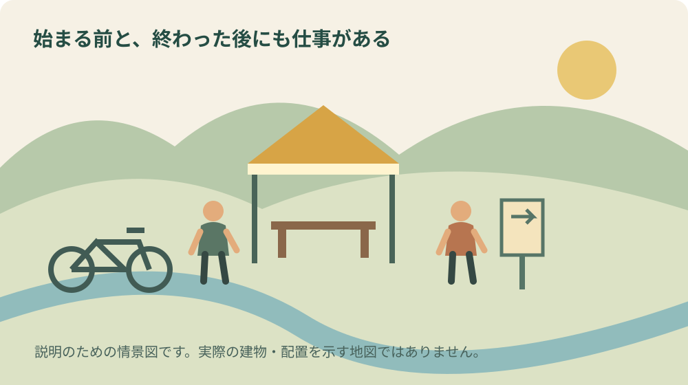
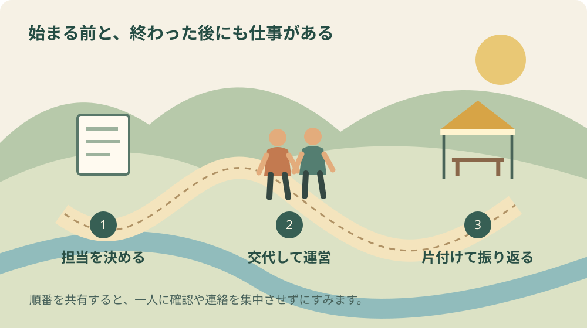

茶ミーティング2026｜森町の運営を支える仕事
表紙は内容を伝えるためのAI生成イラストです。実在の会場や当日の様子を撮影したものではありません。
この記事の要点
Q. 茶ミーティングの募集記録から、手伝う前に何を確認できますか。
A. 案内・設営・撤去の仕事、集合と担当の時間、費用支給の有無を分けて読めます。紹介する募集の締切は過ぎており、追加募集の案内ではありません。次の機会には、自分のできる仕事と参加時間をメモしてから条件を確認するのが出発点です。
催しの写真には、舞台や展示、食べ物が写ります。けれども来場者が楽しめる状態になるまでには、机を運び、案内を整え、終わった後に元へ戻す仕事があります。森町で2026年9月26日に開催予定の茶ミーティングについて、今回はその前後を支える仕事に目を向けます。
材料にするのは、デイトナの公式コミュニティに掲載された、一つのブースのボランティア募集記録です。応募締切の9月10日はすでに過ぎています。この記事は追加募集の告知でも、当日の現場を取材した報告でもありません。募集時に示された条件から、今後手伝う際の確認順序を考えます。
大石浩之（磐田市／不動産業）として、最初に認めたいのは、主催者も手伝う人も時間を出していることです。「好きだからできる」という気持ちに頼るだけでは、次も同じ人数が集まるとは限りません。引き受ける仕事と休める時間が見える方が、参加する側も判断しやすくなります。
全体の開催時間と、ブースの募集時間を分ける
公式特設サイトの開催概要は、第15回DAYTONA森町・静岡茶ミーティングを、2026年9月26日9時から15時、森町一宮4805のデイトナ本社テストコースで開催予定と案内しています。入場無料、雨天決行・荒天中止です。実際の開催状況や来場者数を、この記事では確認していません。
一方、公式コミュニティの募集は「お天気山ジャンクション／ライドアバイクブース」の手伝いです。9時から14時、集合は8時予定、募集人数は2〜3人程度とされていました。イベント全体の時刻と、このブースで示された時刻を混ぜないようにします。
募集に書かれた主な仕事は、案内や設営・撤去の補助です。交通費・時給の支給はなく、弁当などを用意すると説明されています。これらは募集時の条件であり、実際に誰が何時間働いたか、何人参加したかという実績ではありません。
開始前に集まる予定があることは、見る側が気づきにくい事実です。ただし、集合から終了までを全部連続作業時間だと計算することもできません。休憩や交代の実態を確認していないためです。私は数字を見たら、拘束の範囲と実際の担当時間を分けて聞きたいと考えます。
案内補助は、知らないことを答えない仕事でもある
案内係には、何でも即答する人という印象があります。私はむしろ、答えてよい範囲と、責任者につなぐ範囲が分かっていることが大切だと考えます。場所の案内、商品に関する説明、急な変更、困っている来場者への対応では、確認先が異なる可能性があるからです。
仮に初めてブースを手伝うなら、作業前に地図と当日の連絡先を受け取りたいところです。これは今回その準備がなかったという指摘ではありません。募集文だけでは分からない運営方法を、自分が引き受ける前に確認する例として書いています。
来場者から分からない質問を受けたときは、推測で案内せず責任者へつなぎます。長い列ができて焦る場面ほど、「たぶんあちらです」と言いたくなるかもしれません。間違った案内で人を往復させるより、確認中だと短く伝えて待ってもらう方が、結果として負担を小さくできると私は思います。
案内の内容が途中で変わったら、交代者にも同じ情報を渡します。自分が知っただけで終わると、ブースの右と左で違う説明になります。変更点を一枚のメモへ追記し、古い紙をそのまま配らない。私なら、参加前の質問項目に情報の更新方法も加えます。
設営と撤去は、物と通路を一緒に見る
設営の補助を引き受ける場合、何をどこから運び、どの状態に置けば終わりなのかを確かめます。机を並べるという言葉だけでは、運搬、組立て、固定、拭き取りまで誰が担当するか分かりません。初めて来る人にも区切りが見える仕事の渡し方を、私は望みます。
重い物や慣れない器具について、できない作業を事前に伝えることは遠慮ではありません。指示を受けてから無理を重ねるより、担当を決める段階で役割を調整できます。「何でもやります」と約束するより、「案内はできますが重い物の運搬は難しい」と言える方が、運営側も組みやすくなります。
撤去では、来場者が残っている場所と、荷物を動かす場所を区別します。終了予定の時刻になったからといって、周囲を見ずに片付けを始めてよいわけではありません。どの合図で作業を始め、誰が通路を確認するかは、当日の責任者の指示を受ける事項です。
借りた物を戻す仕事も、置き場所だけで終わりません。数量や破損の確認を誰が行い、返却を誰が受けるかまで決めると、帰宅後の問い合わせが減ります。祭りを支える準備と片付けの記事でも、本番の外側にある仕事を数える視点を紹介しています。

交代できるように、楽しむ時間を具体化する
募集記録には、開催中もスタッフ間で調整しながらイベントを楽しめるという説明があります。私が良いと感じるのは、手伝う人にも楽しむ時間があることを言葉にしている点です。ただ、個々の交代時刻や実際の休憩時間まで記録から読み取ることはできません。
自分が参加すると仮定するなら、見たい催しがあることを早めに伝えます。「その時間だけ離れたい」と具体的に言えば、相手も交代できるか考えられます。何も言わずに持ち場を離れることも、遠慮して一日中我慢することも、私には続けやすい参加の形に思えません。
交代時には、引き継ぐ用事を短く残します。返答を待っている人、途中の片付け、追加で必要な物を知らせれば、交代者が最初から状況を調べずに済みます。担当が替わっても仕事が続くようにすることは、休憩を取りやすくするための準備でもあります。
体調が悪くなった場合の伝え方も決めます。無償だから相談しづらい、人数が少ないから抜けられない、と一人で抱えないためです。私は、必要な休憩や退場を申し出られる連絡先があることを、参加を決める材料にしたいと考えます。現場の体制については主催者へ確認してください。
交通費がなくても参加できるか、家計と予定で考える
無償で手伝うかどうかは、本人が判断することです。好きな催しに関わる喜びと、交通費や移動時間を負担できるかは、一緒に考えてよいと思います。お礼があるから負担を質問してはいけない、という関係にはしたくありません。
家族へ予定を伝えるときは、ブースの時間だけでなく、往復の移動と帰宅後の用事まで見ます。送迎が必要なら、送る人にも時間の負担があります。実家の見守りや家事の予定がある場合、一日を空けるのか、短い範囲なら参加できるのかを先に整理します。
この記事から、募集条件が労務上どのような扱いになるかを断定することはしません。個別の関係や実際の指示内容を確認していないからです。契約や補償が気になる場合は、主催者へ書面の条件を確かめ、必要に応じて適切な専門窓口へ相談してください。
「今回参加しない」と決める自由も残します。来場して案内を守る、片付けの邪魔をしない、後日に感想を伝えるなど、関わり方は一つではありません。私は、断った人を責めない方が、次の機会に条件が合った人も参加しやすいと考えます。
森町の資料にも、見えにくい運営費が残る
森町の協働まちづくり推進事業の事例集には、2015年度から2020年度の実施事業として茶ミーティングの紹介があります。過去の費用内訳に、テントの設営、呈茶用のお茶、仮設トイレの設営と汲み取りが記されています。2026年の予算や実績を示す資料ではありません。
私がこの過去資料から受け取るのは、催しの魅力を作る費用と、安心して滞在するための費用が同時にあるという点です。目立つ展示だけを数えても、会場の運営は見えません。仮設設備の用意や処理まで誰かが段取りしていることを、見る側も想像したいと思います。
別の会場の例ですが、森町文化会館の使用料案内は、使用時間に準備と片付けも含むと示しています。これはデイトナの会場へ適用される規則ではありません。地域で自分たちが催しを開く際も、本番の外側の時間を予定へ入れる必要がある、という比較の材料です。
会館を使う具体的な手続きは、文化会館の準備・撤去込みの利用案内で別に整理しています。企業の敷地、町の会館、地域の集会所では条件が違います。同じ「イベント会場」という言葉で、一つの規則を横へ広げないようにします。
良い点：一つのブースの仕事が具体的に見える
私が募集記録の良い点と考えるのは、対象ブースと主な仕事が示されていることです。大きな催し全体を支えてほしいという言葉だけでは、初めての人は自分にできるか判断できません。案内や設営・撤去の補助という名前があることで、質問する入口ができます。
費用支給の有無を最初から示す点も、参加者が家計を考える材料になります。募集する側に気を遣って聞きにくい項目ほど、先に分かる方がよいと私は思います。ただし、条件が公開されていることと、すべての人に参加しやすいことは別です。自分に合うかはそれぞれが決めます。
公式特設サイトに森町の文化を紹介する内容があることも、町の催しとして興味深く感じます。山名神社天王祭舞楽の紹介が掲載されており、バイクをきっかけに町の芸能へ目を向ける入口になります。背景を知りたい人には、山名神社の舞楽についての記事も参考になります。
注文したい点：引き受ける範囲の確認まで支えたい
私からの注文は、募集文を読んだ後に、作業の範囲と判断を委ねる先を確認できることです。初参加の人は、どこまで聞いてよいか迷います。重い荷物、器具の使用、交代、欠席連絡などを短く確認できれば、本人も家族も予定を組みやすくなります。
今回の募集文にすべてが書かれていないから、運営に不足があったと結論づけるものではありません。採用後に説明される内容もあるでしょう。公表記録と実際の運用を混ぜず、自分が次に参加するなら何を確認するか、という提案として受け取ってください。
補償の扱いも、ボランティアという呼び方だけで判断できません。活動保険と行事用保険の違いを整理した記事で確認項目を挙げています。企業が開く催しにどの契約が適用されるかは、主催者と契約窓口に確かめる事項です。
対案・結論：できる仕事と時間を一枚にする
今日できる小さな一歩は、次の機会に手伝える仕事と時間をメモすることです。案内、受付、軽い物の整理など、できる範囲を具体的に書きます。同時に、難しい仕事、休憩が必要な条件、帰る時刻も書きます。長時間参加することだけを協力の尺度にしません。
主催者へ伝えるときは、参加できると言ってから制約を小出しにするより、最初に範囲を示します。相手が調整できなければ、その回は見送る選択もあります。私なら「何でも」より、引き受けた一つを確実に終えられる条件を優先します。
運営する側なら、仕事を人名へ割り当てる前に、仕事内容の一覧を作る方法を提案します。必要な経験、人数、始める合図、終わりの状態が分かれば、新しい人へ渡しやすくなります。終了後には、予定と違った作業だけを短く残し、次回の募集や説明へ反映します。

大石の視点：敷地を使う仕事には、戻す責任もある
私は不動産の実務を考える立場から、場所を使い終えた後の状態に関心があります。借りた設備、通路、車の出入口、周囲のごみを誰が確認するか。これは今回の会場で問題が起きたという話ではなく、催しを引き受ける前に私が整理したい事項です。
公式案内は入退場の誘導や近隣への配慮を求めています。来場者が決められた経路を守ることも、運営を支える行動です。案内スタッフの人数を増やすことだけでなく、来る側が事前に読める案内を読んでおくことで、当日の説明を減らせる場面があります。
ただし、細かい役割表を作り過ぎて、楽しむ余白が消えるのではないかという迷いもあります。私はすべての行動を管理したいわけではありません。事故につながる場面、引継ぎが必要な仕事、退出時刻だけを先に決め、残りの時間を楽しめるようにする方がよいと思います。
森町の実家の管理や地域の当番を引き継ぐ家族にも、同じ考え方を使えます。前任者が何となく全部していた仕事を、誰でもできる小さな単位へ分けることです。実家カルテなどに鍵や連絡先を残すのも、その一例です。家を売ると決めていなくても、引継ぎの準備はできます。
よくある質問
この記事を読んで、今からスタッフへ応募できますか。
紹介している募集記録の締切はすでに過ぎています。この記事は追加募集の案内ではなく、仕事の範囲を考えるための記録の読み方です。今後の募集については主催者の新しい案内を確認してください。過去の投稿の条件が、次回も同じだと決めつけないようにします。
ブースの終了時刻は、イベント全体と同じですか。
全体の開催概要と、個別ブースの募集文は分けて読む必要があります。担当する作業、集合、交代、撤去後の解散がどこまで含まれるかは、主催者への確認事項です。募集欄の終わりの時刻だけを見て、帰りの交通や家族の予定を確定しないようにしてください。
重い物を運べなくても、手伝いを考えてよいですか。
できる仕事と難しい仕事を具体的に伝え、受入側が役割を調整できるか相談します。この記事から採用や担当の可否を保証することはできません。無理をして何でも引き受けるより、案内や軽作業などできる範囲と参加時間を示す方が、互いに判断しやすいと考えます。
まとめ：楽しさの前後にある仕事を見える形へ
茶ミーティングの募集記録は、案内、設営、撤去など、催しを支える仕事を考える入口になります。実際の作業実績を想像で埋めず、公表された条件と自分の提案を分けて読む。次の機会に向けて、できる仕事と時間を一枚にするところから始めてみるのが私の結論です。
公式情報源
- デイトナ公式コミュニティ・2026茶ミーティングのスタッフ募集記録（締切済み）（2026年9月26日確認）
- デイトナ・茶ミーティング2026公式特設サイト（2026年9月26日確認）
- 森町協働まちづくり推進事業・補助金活用事例集（2015〜2020年度）（2026年9月26日確認）
- 森町文化会館使用料・準備と片付けを含む時間区分（2026年9月26日確認）
制度・開催条件・営業状況は変わる場合があります。個別の利用条件は各主催者や担当窓口へ確認してください。

磐田市で不動産業を営む宅地建物取引士。富士ヶ丘サービス株式会社。森町の暮らしと、地域を支える段取りを一次情報から考えます。
プロフィール・編集方針